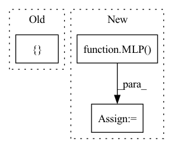

Pattern ID :718

Before Change
"P2": [40, 40, 64],
"P3": [20, 20, 32],
"P4": [10, 10, 16],
"P5": [5, 5, 8]
}
self.d_model = d_model
After Change
self.d_model = d_model
self.nhead = nhead
reg_head = MLP(d_model, d_model, 6, 3)
decoder_layer = FocusedDecoderLayer(
d_model, dim_feedforward, dropout, activation, nhead, config["obj_self_attn"],
config, bbox_props, anchors
In pattern: SUPERPATTERN
Frequency: 3
Non-data size: 3
Instances
Fragment ID: 2490998
Project Name: bwittmann/transoar
Commit Name: 93490790c06b3fe20dfd1eae015b8d79f8fd627a
Time: 2022-05-25
Author: bastian.wittmann@tum.de
File Name: transoar/models/necks/focused_decoder.py
Class Name: FocusedDecoder
Method Name: __init__
Parent Class: nn.Module
Fragment ID: 2491003
Project Name: cherrypiesexy/imitation_learning
Commit Name: d3dbcfd6f84f83aa4be338202b6b4c22d8cdd13a
Time: 2021-01-29
Author: interga@post-hardcore.ru
File Name: algorithms/nn/actor_critic.py
Class Name: ActorCriticTwoMLP
Method Name: __init__
Parent Class: nn.Module
Fragment ID: 2491001
Project Name: maria-korosteleva/garment-pattern-estimation
Commit Name: f968893c30485d64366c85055b379f24bacd8618
Time: 2021-01-20
Author: mariako@kaist.ac.kr
File Name: nn/net_blocks.py
Class Name: PointNetPlusPlus
Method Name: __init__
Parent Class: nn.Module